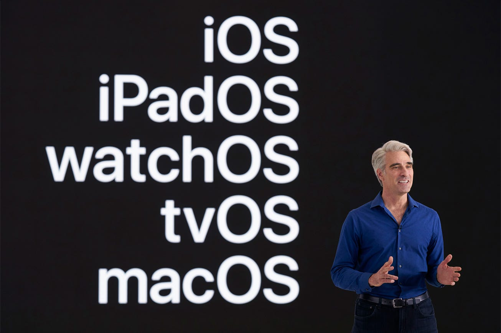

Software has become an indispensable part of our lives, present in both personal and professional spheres. Every software application comes with a version number, serving as a crucial identifier. Are you searching for a new feature on your iPhone but having trouble finding it? Ensure that you are running the correct version of iOS. Encountering a nagging bug on your Mac? Rest assured, it has likely been fixed in the next update of macOS, the operating system that powers your Mac computers.
We encounter version numbers for software and operating systems all the time. However, whether you’re a regular user, a tech-savvy individual, or a software developer, understanding these numbers can often be perplexing. Do these version numbers follow a discernible pattern? Are they interrelated? Let’s delve into the mystery and find out.
Apple designs and develops the operating systems for all the hardware it manufactures. Below is a list of these operating systems along with the hardware platforms they run on:
In addition to its mainstream operating systems, Apple also develops some lesser-known ones that power specific hardware and accessories. For instance, audioOS, commonly known as HomePod Software, is a variant of iOS used in Apple’s HomePod speakers. Another example is bridgeOS, a variant of watchOS found on Apple computers with T2 chips, which also powers the Touch Bar on supported models of MacBook Pro.
While the multitude of operating system types and their numerous version numbers may seem bewildering, they adhere to a discernible pattern and are interconnected and interdependent. This article aims to demystify the version numbering system used by Apple’s various operating systems.
The version numbering protocol for major Apple software, including operating systems like macOS, iOS/iPadOS, watchOS, tvOS, visionOS, and professional tools like Xcode, follows a three-part numbering pattern: X.Y.Z. This format is described as follows:
The version numbering system historically differed slightly between macOS and the other operating systems developed by Apple (iOS/iPadOS, watchOS, and tvOS). The latter are part of a more recent generation of operating systems, while macOS has a much longer history dating back to the early 2000s. macOS originally debuted as Mac OS X in 2001, was rebranded as OS X in 2012, and eventually became macOS in 2016. This change in branding for macOS aimed to ensure consistency in the naming of operating systems across Apple’s entire lineup.
In the past, macOS version numbering has followed a format of 10.X.Y, where 10.X denotes the major version number and Y signifies the minor version number, also known as the point release. A patch release, aimed at fixing non-critical bugs or security vulnerabilities, is released as a supplemental update. A supplemental update is characterised by an incremented build number, which is distinct from the macOS version number. The build number may vary among different models of Mac computers, even for the same macOS version. Together, the macOS version number and the build number fully identify the version or build of macOS running on a particular Mac computer.
For example, macOS Catalina 10.15 was released in September 2019. The major version number for the operating system is 10.15. Around WWDC 2020, the fifth point release of the operating system was introduced, increasing the version number to 10.15.5. A patch release was issued for the 10.15.5 point release. The original release of macOS Catalina 10.15.5 was on May 26, 2020, with the build number 19F96. A patch release, also known as a supplemental update, was issued on June 1, 2020, incrementing the build number to 19F101.
In summary, the complete macOS version number for the release would be stated as macOS Catalina Version 10.15.5 (build 19F101). This information can also be verified by navigating to Apple Menu → About This Mac on your Mac.
Apple revamped the version numbering for macOS starting with macOS 11 Big Sur, released in November 2020. From this release onward, a single-digit major version is used, incremented annually. This change aligns macOS version numbering with the pattern observed in other Apple operating systems, as discussed in the following section of this article.
The other operating systems (iOS/iPadOS, watchOS, tvOS, visionOS), introduced later, follow a uniform approach where a patch release number is included as part of the version number. They use version numbering of the form X.Y.Z, where X indicates the major version number, Y indicates a point release, and Z indicates a bug fix or patch release. These operating systems also have a build number similar to macOS, although it is not typically referenced directly. (Starting with macOS 11 Big Sur, Apple has adopted this protocol for macOS version numbering.)
To illustrate, as of February 2024, the version numbers for Apple’s operating systems are as follows:
Note: iPadOS shares many similarities with iOS, essentially being the same operating system but marketed specifically for iPads. This rebranding occurred with the release of iOS 13 in September 2019 to highlight iPad-specific features not present on supported iPhone and iPod touch devices. Despite their similarities, iOS and iPadOS have maintained the same version numbering system throughout all point and patch releases, with a few exceptions where version numbers differ slightly for iPadOS to accommodate its unique features or bug fixes. Over time, iPadOS has evolved to incorporate exclusive features that leverage the larger screen size and workflows optimised for the tablet form factor.
All software released by Apple is accompanied by a build number in the format XaY, where X is an integer incremented by one for every major release, a is an alphabet character incremented for each release, and Y is an integer incremented for each release of the software.
How the build number is incremented is known only to the Apple engineering team. However, generally speaking, the last component (Y) provides a rough indication of how many times the software was built before being released to the public.
Here's an Ask Different post that sheds some light on the topic: What's the structure behind Apple version numbers / build numbers?
Xcode is a professional Integrated Development Environment (IDE) for macOS that empowers software developers to create applications for all Apple platforms.
For any of the mentioned operating systems, a new point release typically introduces new features, significant enhancements, major bug fixes, and security improvements. Similarly, in the case of Xcode, a new point release includes updated Software Development Kits (SDKs) with new or enhanced APIs corresponding to the updated point releases of macOS, iOS/iPadOS, watchOS, tvOS, or visionOS.
An Xcode point release, like those for the operating systems, may introduce new features within Xcode itself and major bug fixes. Historically, however, it has been uncommon to see new features introduced via Xcode point releases. Xcode follows a similar pattern to iOS/iPadOS, watchOS, and tvOS in incrementing patch release version numbers.
For a considerable period, Xcode has followed the annual increment pattern for its major version numbers, aligning with all operating systems developed by Apple. This consistency reflects Apple’s established schedule in version numbering across its major developer tools and platforms.
To illustrate, the current release of Xcode as of this writing is Version 15.2, released on January 8, 2024, indicating a major version number of 15 and a point release of 2. (More details can be found here: Xcode — Wikipedia).
Until a few years ago, Xcode used to receive as many point releases as iOS/iPadOS, which typically sees frequent point releases introducing new features and APIs. However, while macOS has consistently received around 6 or more point releases in recent years, subsequent point releases beyond version number 1 or 2 in Xcode have not introduced many major user-facing features.
While operating system updates can be installed via the Software Update setting under System Settings in macOS and the Settings app in iOS/iPadOS, watchOS, tvOS, and visionOS, Xcode updates are released via the Mac App Store. Additionally, both the current and past versions of Xcode are available for download directly from the Software Downloads section of the Apple Developer website.
An unofficial but highly detailed account of Xcode release history can be found here: Xcode Releases.
In today's fast-paced world, where new software versions are released frequently, some software companies opt not to chase deadlines with a predefined set of features. This approach acknowledges the challenge of ensuring that all features are released on a predetermined schedule while maintaining a bug-free and complete implementation.
Apple has adopted a yearly release schedule with predictable timelines for major operating system software. However, achieving the strategy of releasing all features at decent quality levels within these timelines can be challenging in practice.
Instead, an approach is followed where the major features from the planned list are released in the initial version of the software, while the remaining features are gradually released as part of subsequent point releases.
A product manager is responsible for coordinating with all teams and devising a plan that outlines which features will be included in each point release. As features complete development and undergo stability testing, they become candidates for inclusion in a point release. However, deadlines may still be enforced on engineering teams to ensure timely delivery.
A general line of thinking is: Prioritise planning releases around features that are complete and ready for deployment rather than striving to meet deadlines at all costs.
Image credits: